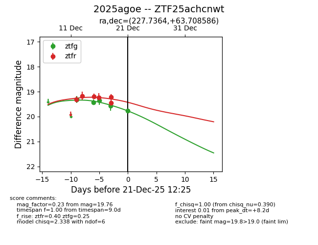
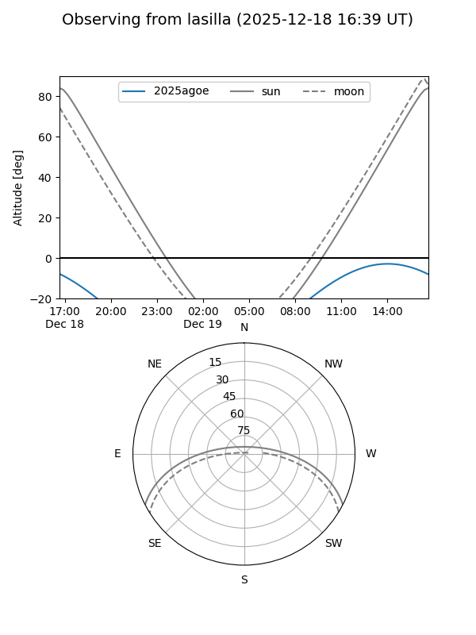
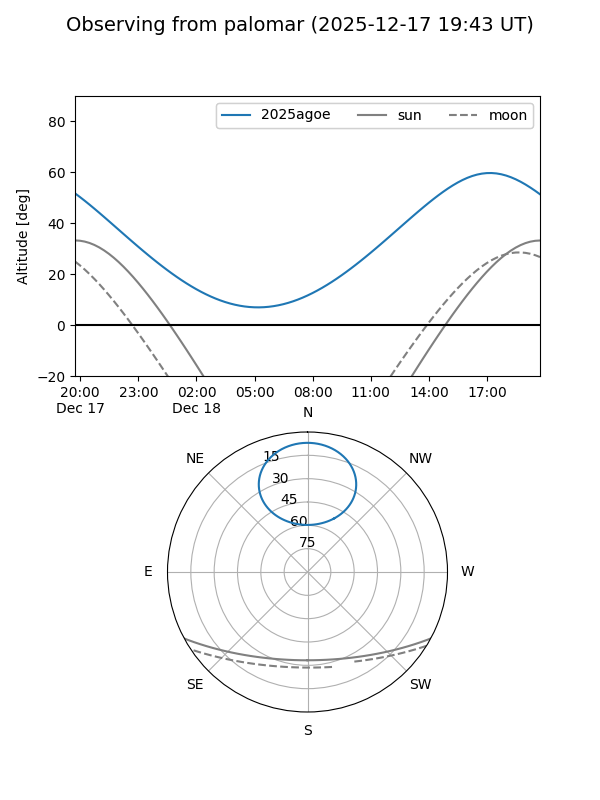
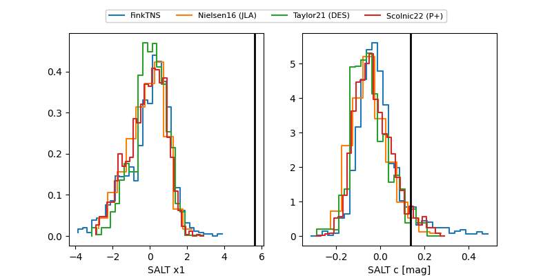

2025agoe
Target 2025agoe at 2025-12-21 13:52
Aliases and brokers:
FINK: fink-portal.org/ZTF25achcnwt
Lasair: lasair-ztf.lsst.ac.uk/objects/ZTF25achcnwt
ALeRCE: alerce.online/object/ZTF25achcnwt
TNS: wis-tns.org/object/2025agoe
YSE: ziggy.ucolick.org/yse/transient_detail/2025agoe
alt names
ZTF25achcnwt (ztf,fink_ztf)
2025agoe (tns,yse)
Coordinates:
equatorial (ra, dec) = 227.7364,+63.70859
equatorial (HMS+DMS) = 15:10:56.73,+63:42:30.91
galactic (l, b) = (101.1003,+47.07244)
Flags:
Photometry:
last ztfg=19.55, ztfr=19.35
6 ztfg, 7 ztfr detections
Lightcurve

Visibility


Additional plots
